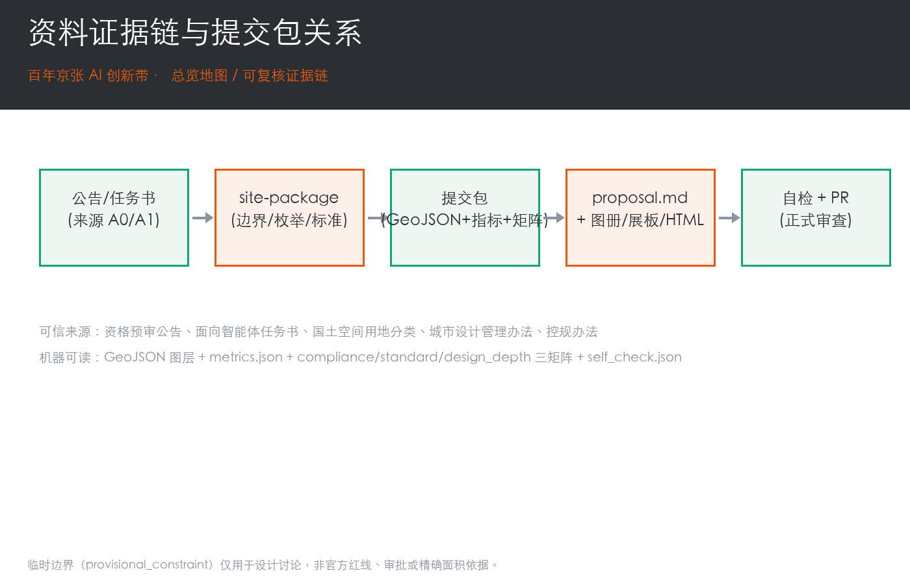
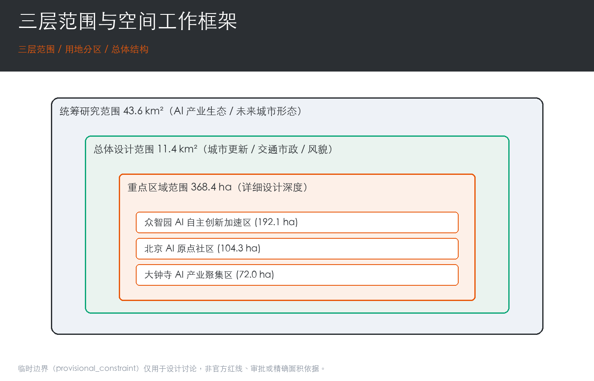
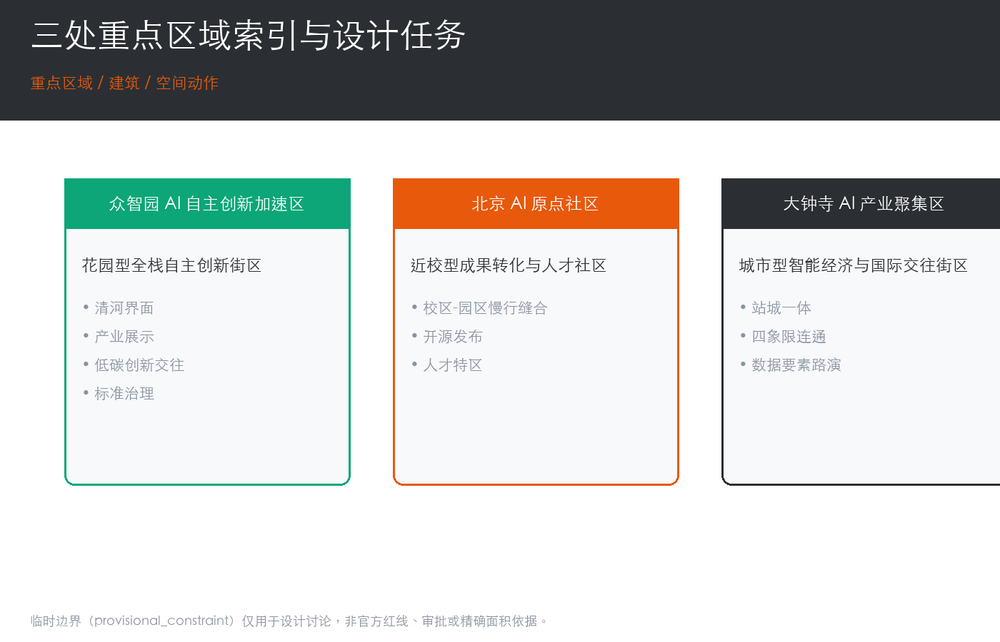
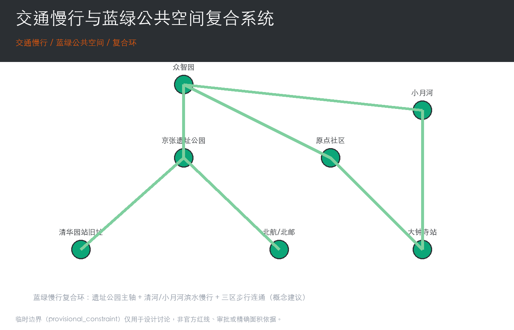

临时边界（provisional_constraint）仅用于方案生成、自检与可视化，非官方红线、审批依据或精确面积依据；官方边界发布后须重算 site boundary、key areas、land use、roads、green space、public space、buildings、phasing 与 metrics。
总览地图 / 三层范围 / 重点区域
资料证据链与提交包关系

三层范围与空间工作框架

三处重点区域索引

交通慢行与蓝绿公共空间

用地分区 / 建筑 / 更新项目 / AI 场景
用地分区建筑更新项目AI 场景 本方案以国土空间用地用海分类（07 居住 / 08 公共管理与公共服务 / 05 商业服务业 / 14 绿地与开敞空间 / 16 留白）组织用地，建筑基底区分保留/改造/更新/新建，更新项目清单含 6 项（JZ-01~JZ-06），AI 场景卡 10 张、产业测试验证场景 3 个、用户画像 5 类。
核心指标
11.41 km²总体设计范围面积 (site_area_sqm)
12.34%绿地率 (green_ratio)
7.33%公共空间率 (public_space_ratio)
任务覆盖 / 自检状态 / 来源 / 假设
任务覆盖 公告 1.3/1.4/1.5 与 agent.1~agent.6 全覆盖于 compliance_matrix.json。
自检状态 spatial / visual / professional 通过；确定性校验在 official boundary 补齐后进入 formal professional scoring。
来源 资格预审公告(A0)、面向智能体任务书(A1)、国土空间分类、城市设计管理办法、控规办法。
假设 临时边界精度受限；容积率/建筑高度/密度/退线/绿地率未知，列为待正式控规确认。